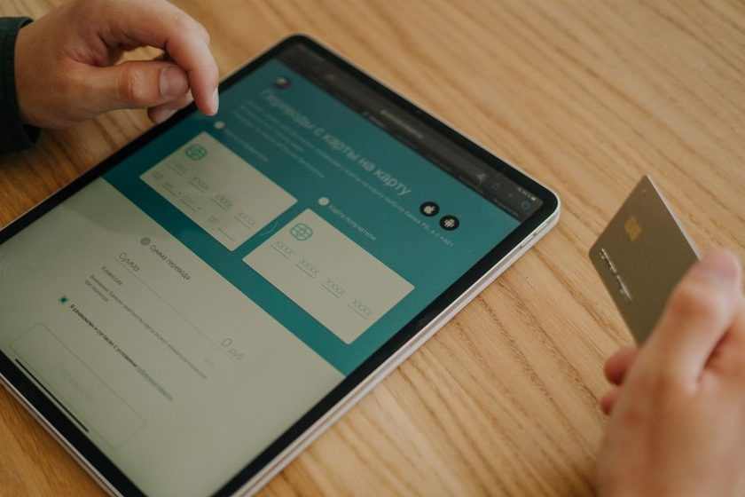

Open Finance na prática: o que muda quando você compartilha seus dados bancários
Entenda o consentimento, os benefícios reais e como revogar o acesso aos seus dados quando quiser.

Você provavelmente já viu, dentro do app do seu banco, um convite para "conectar suas contas" ou "trazer seus dados de outra instituição". Esse recurso tem nome: Open Finance. A ideia por trás dele é simples de dizer e importante de entender: os seus dados financeiros são seus, e você pode escolher compartilhá-los — de forma controlada, por um tempo e com quem você quiser.
O problema é que a palavra "dados bancários" acende um alerta em qualquer pessoa cuidadosa. E faz sentido. Por isso, em vez de vender maravilhas ou espalhar medo, este guia explica com calma o que o Open Finance é, o que ele não é, e como você mantém o controle — inclusive como desligar tudo em poucos toques.
O que é o Open Finance, em linguagem simples
Open Finance (que já foi chamado de Open Banking na fase inicial) é um conjunto de regras que permite o compartilhamento consentido de informações financeiras entre instituições autorizadas. Na prática, você autoriza um banco ou uma fintech a receber, de outra instituição, dados como o histórico da sua conta, seus produtos contratados ou seu perfil de crédito.
A palavra que carrega o peso aqui é consentido. Nada trafega sem que você diga "sim", ponto a ponto. Não é o banco decidindo por você, nem uma central que despeja seus dados no mercado. É você, no seu app, marcando o que topa compartilhar, com quem e por quanto tempo.
Pense no Open Finance como uma "chave de visita" que você entrega, com data de validade, e pode tomar de volta a qualquer momento. Ninguém entra sem a chave, e você sempre sabe quem está com ela.
Como funciona o consentimento, passo a passo
O consentimento é o coração de tudo. Ele costuma seguir três características que valem a pena guardar:
- É opt-in. Por padrão, nada é compartilhado. Você precisa ativar a conexão de forma explícita — o silêncio nunca vale como autorização.
- Tem prazo. Todo consentimento vem com uma validade (em geral algo em torno de 12 meses, podendo variar conforme o produto). Passado o prazo, ele expira e precisa ser renovado.
- É granular. Você escolhe quais dados libera — só os dados cadastrais, só saldos, só o histórico de transações — e não é obrigado a entregar tudo.
O fluxo, quando você aceita, é mais ou menos assim: o app onde você quer usar os dados te redireciona para o app da instituição que guarda os dados, você se autentica ali (com a sua senha ou biometria de sempre), confirma exatamente o que está liberando e volta. Repare no detalhe: você digita sua senha no seu próprio banco, nunca no app de terceiros. Isso é proposital.
Privacidade em primeiro lugar
Nenhuma instituição séria vai pedir sua senha do banco dentro do app dela para "conectar o Open Finance". A autenticação sempre acontece no ambiente do seu banco de origem. Se alguém pedir senha fora disso, desconfie — é um sinal clássico de golpe. Vale reforçar isso ao ler nosso guia sobre como reconhecer golpes financeiros sem paranoia.
Os benefícios possíveis (sem promessa mágica)
Compartilhar dados só faz sentido se você recebe algo de volta. Os ganhos mais concretos costumam ser:
1. Ofertas mais justas de crédito
Quando uma instituição enxerga seu histórico real — que você paga em dia, movimenta a conta, tem renda estável — ela consegue avaliar seu risco com mais precisão. Isso pode se traduzir em juros menores ou limites mais adequados, porque a decisão deixa de depender só de um score genérico. Se o assunto te interessa, veja também os mitos do score de crédito.
2. Portabilidade de crédito mais fácil
Levar uma dívida cara de um banco para outro com juros menores — a portabilidade — historicamente dava trabalho. Com dados compartilhados, a nova instituição já vê as condições do seu contrato atual e pode fazer uma contraproposta sem que você precise reunir papelada.
3. Visão consolidada das suas finanças
Talvez o benefício mais palpável no dia a dia: reunir, em uma única tela, o saldo e os gastos de contas em bancos diferentes. Em vez de abrir cinco apps para saber quanto você tem, um lugar só mostra o retrato completo — algo que ajuda demais na hora de montar um orçamento realista e de acompanhar a liquidez do seu dinheiro.
O que o Open Finance NÃO é
Aqui mora boa parte da confusão. Vale deixar preto no branco:
| O que É | O que NÃO é |
|---|---|
| Compartilhamento de dados que você autoriza | Acesso à movimentação da sua conta sem permissão |
| Opcional — você decide se entra | Obrigatório ou automático |
| Reversível a qualquer momento | Uma porta que fica aberta para sempre |
| Feito entre instituições autorizadas e reguladas | Venda dos seus dados para qualquer empresa |
| Autenticado no app do seu próprio banco | Um pedido de senha dentro de um app de terceiros |
Dois pontos merecem destaque. Primeiro: compartilhar dados não é o mesmo que dar acesso ao seu dinheiro. Ver seu histórico é diferente de movimentar sua conta — e movimentar exige uma autorização própria e específica, à parte. Segundo: o Open Finance não é obrigatório. Você pode viver perfeitamente sem ativar nenhuma conexão. É uma ferramenta à sua disposição, não um pedágio.
Riscos e cuidados de sempre
Ferramenta boa também pede atenção. Nada aqui é motivo para pânico, mas sim para bom senso:
- Compartilhe só o necessário. Se um serviço pede acesso a tudo para entregar algo simples, questione. Menos dados liberados, menor a exposição.
- Revise seus consentimentos de tempos em tempos. Aquele app que você testou e abandonou pode continuar com acesso ativo. Uma faxina a cada poucos meses resolve.
- Confira se a instituição é autorizada. Só participam do Open Finance instituições reguladas. Ofertas fora desse ambiente, por links estranhos, são o terreno preferido dos golpistas.
- Desconfie de urgência. "Conecte agora ou perca o benefício" é discurso de pressão, não de um serviço legítimo.
Passo a passo: como conceder o acesso
- No app da instituição onde você quer usar os dados, procure a área de Open Finance (às vezes aparece como "Conectar contas").
- Escolha a instituição de origem — aquela que hoje guarda os dados que você quer trazer.
- Você será redirecionado para o app dessa instituição de origem. Autentique-se ali, com sua senha ou biometria habitual.
- Leia com atenção quais dados estão sendo pedidos e por quanto tempo. Marque só o que fizer sentido.
- Confirme. Pronto: a conexão fica ativa dentro do prazo que você aprovou.
Passo a passo: como revogar quando quiser
Essa é a parte que muita gente não sabe que existe — e é justamente a que devolve o controle a você. Revogar é rápido:
- Abra o app de qualquer uma das duas pontas (a que compartilha ou a que recebe os dados).
- Vá até a área de Open Finance e procure por "Consentimentos", "Compartilhamentos" ou "Conexões ativas".
- Localize a conexão que quer encerrar e toque em cancelar ou revogar.
- A partir da confirmação, o fluxo de dados para. Não precisa justificar, não há multa, não há carência.
Regra de ouro: se você não lembra por que autorizou uma conexão, provavelmente não precisa mais dela. Revogar é reversível — dá para reativar depois, se voltar a fazer sentido.
Acompanhe tudo em um lugar só
O Bússola Leve ajuda você a organizar orçamento, metas e gastos com calma — para que a visão consolidada das suas finanças vire hábito, e não sufoco.
Conhecer o app Bússola LeveConclusão: o controle continua com você
O Open Finance muda menos coisas do que o nome sugere e mais coisas do que parece. Ele não abre sua conta para o mundo nem obriga você a nada. O que ele faz é reconhecer, na prática, que a informação sobre a sua vida financeira pertence a você — e dar a você as alavancas para usá-la a seu favor: negociar melhor, migrar dívidas caras, enxergar o todo.
Se for experimentar, comece pequeno: conecte uma conta, veja o que ganha, revise em alguns meses. Compartilhe só o necessário e mantenha o hábito de revisar seus consentimentos. Com esse cuidado simples, o Open Finance deixa de ser um bicho de sete cabeças e vira o que deveria ser desde o começo: uma ferramenta a serviço da sua tranquilidade. Ficou com dúvida sobre algum termo? Nosso glossário e a página de dúvidas frequentes estão sempre por perto.
Este conteúdo é educativo e informativo. O Plano Leve não faz recomendação de investimento, oferta de crédito nem consultoria financeira individual. Regras e prazos do Open Finance podem mudar; confirme sempre as condições diretamente com sua instituição financeira.